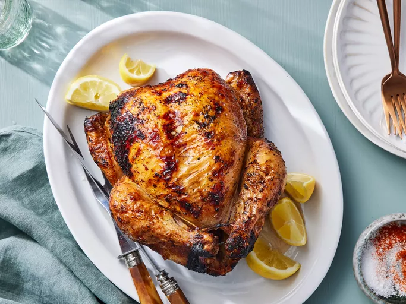

Rotisserie Chicken

Description
This rotisserie chicken recipe is easy to make on the grill with simple seasonings. Occasional basting with a butter mixture keeps the skin crispy and the meat moist. Our family loves this! Rotisserie chicken is perfect as the main dish with French fries and coleslaw, or with any number of other sides.
Ingredients
- Whole Chicken
- Butter
- Seasonings
Steps
- Cool the chicken for about 15 minutes before carving.
- Place the chicken, breast-side up, on a cutting board.
- Pull one of the legs away from the body; slice through the meat until the hip bone is exposed. Pull the leg harder until it’s detached.
- Separate the drumstick and thigh using your knife.
- Pull the wing tip away from the breast until you can easily cut through the joint.
- Slice one of the breasts away from the breastbone. Repeat with the other breast.
Home